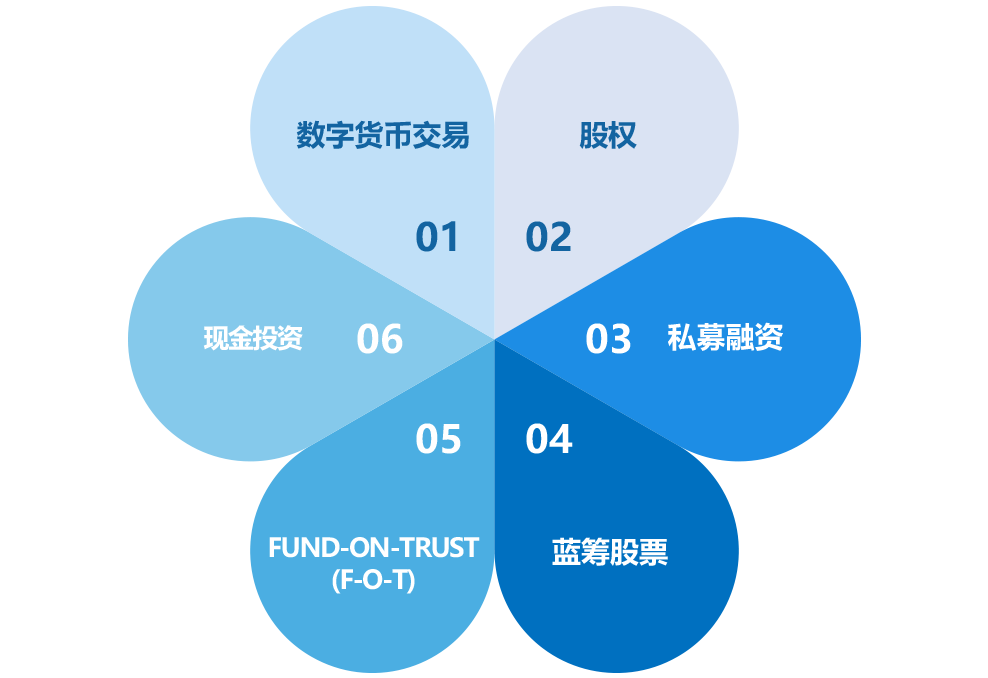

翻转全球经济
积极向上
投资策略
协商投资于风险管理系统的目的系采用灵活的投资策略,服从全球市场有效地产生投资收益。投资者能动态接触到股票、定向增发、货币 和全球资金,在成本效益的结构之下产生效益。
AT投资经理团队在交易及投资領域中兼具亚洲价值观与全球视野。协商投资与风险管理系统,力求持续在流通市场长期资本增值的同时,致力与成为极致风险管理的精明投资者。通过专业设计来结合各种收益来源,并在全球金融市场直接交易,是以实施规则为基础的策
略性投资组合。
运用扎实的风险管理原则和既定的投资策略,将战略重点聚焦于客户的个人投资需求和范围包括如下内容:
智能交易机器人
独创以人工智能+区块链+数字资产三大创新合为一体的新兴技术，为全球各个阶层的理财者、投资者、交易者提供简单易行的智能解决方案。全天候24小时不间断为客户的账户进行高效监管与管理，并把握每一次财富增长良机。
市场中性策略基金
AT 策略基金是根据不同的投资目标、视野和风险承受能力,运用差额短缺法,无论市场条件良窳,它结合了具有吸引力的机会收益,并能针对性的对资本进行保全。
可持续性投资
AT 可持续性投资的多元资产基金是积极管理的混合性投资组合,通过结构性的规划可于第三方资金中落实。其战略性的资产配置中亦含有其他可持续的资产类别,包括小额贷款,私募股权和未公开发行公司股权。
动态盾
AT 多元资产动态盾是使用定量趋势追踪法进行管理。基于当时的市场状况来进行动态的资产配置,该基金是利用市场波动机会,计划性地限制了相当大的下行风险。
多元化投资
投资信托结构提供多元化的服务给予本地区域性及国际的客户、例如财产及遗产策划、受托人及监管人以及基金和私募基金的服务。另外投资信託能给予投资者多元化的资产级别、例如股票、外汇,期货、对冲基金及其他的投资。这些投资可包括国际不同的主题及项目、行业和投资组合。
